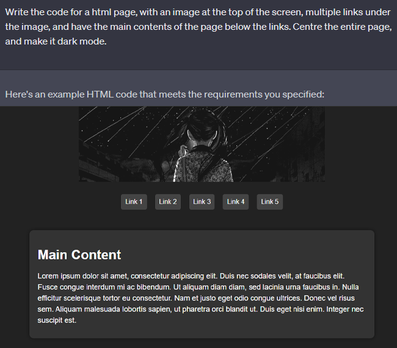

YOU DIDN'T LEARN
I don't really have anything to write about right now, so I suppose I will just write about this
site itself as a test with formatting and stuff. The point of this is how I used ChatGPT to help
make this site, not that it's anything complex. AI stuff has been focused (negatively) on art
for reasons which are probably justified, but I think that's just one side.

This is what I asked for and received, it's super basic but it's a base to go off of. After
this, I was able to take awhile to modify it and make the changes I want, to make the design
look less basic.

None of this is exactly insane or anything, and you could google all of this (which is what I
always did) to learn how to achieve what you want. Using google is kind of cumbersome though,
because it can be difficult to word your issue, and if you're clueless about coding, it's not
always easy to know how to even implement the things that people give examples of into your
code.
This is where AI kind of blew my mind, because now I can just paste the code I'm having trouble
with and have it implemented into my page.
This is what I did for the art page, and for the most part it gives you code which can be added
almost perfectly from the start. I suppose the one downside is that I think it becomes harder to
retain the information afterwards. While I still learned a lot from using the AI, so now I have
a basic understanding of HTML/CSS, I naturally didn't learn quite as much as needing to manually
do everything, and for stuff like JS, you'd just simply learn nothing.
I could link all the different instances of questions I asked AI and ramble a lot, but that's
probably unnecessary because the main point is just how cool I think it is that everything is
becoming more easily accessible for creative stuff. It takes a lot of time to get
semi-proficient at something, and while it's not as "rewarding" as doing it all by yourself,
it's probably a good thing overall that anyone can now technically make what they want without
the limitation of time to learn.